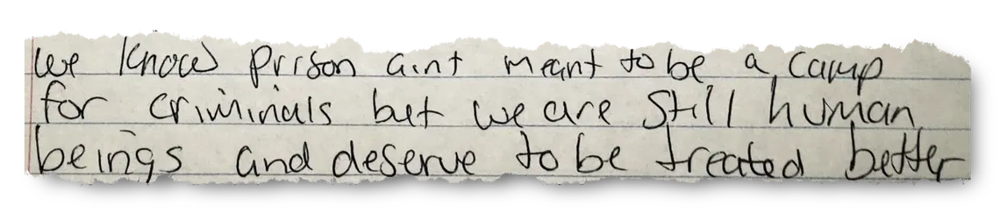

Lived Experiences
Prison life is shaped by routines that are strict, repetitive, and closely monitored. Everyday activities, from meals to movement between spaces, are organized through institutional rules that leave little room for personal autonomy. Over time, many incarcerated people adapt to this environment in order to cope with the demands of confinement.
Researchers often describe this process as "prisonization," a gradual psychological adjustment in which individuals learn the norms, expectations, and survival strategies required within prison life. This adaptation can involve becoming hyperaware of potential threats, learning to suppress emotions, or distancing oneself from others in order to avoid conflict.
Primary Excerpts:



These experiences rarely appear in official records. Administrative files document behavior and discipline, but they seldom capture the emotional realities of living in a controlled environment. Personal letters, reflections, and testimonies often become the only traces of these lived experiences.
Looking at prisons through these personal accounts reveals a different archive of incarceration, one made not of reports and classifications, but of everyday attempts to preserve identity, relationships, and dignity within restrictive conditions.
Containment & Control
Prisons are designed as systems of containment. Their architecture, surveillance technologies, and administrative procedures work together to regulate movement and behavior. Walls, checkpoints, and monitored corridors create environments where visibility and control are constant features of daily life.
"During my own career as an antiprison activist I have seen the population of U.S. prison increase with such rapidity that many people in Black, Latino, and Native American communitites now have a far greater change at going to prison than of getting a decent education."
Angela Davis, Are Prisons Obsolete? (2003)
"The question of whether prisons have become an obsolete institution has become espescially urgent in light of the fact that more than two million people (out of a world total of nine million) now inhabit U.S. prisons, jails, youth facilities, and immigration detention centers."
Angela Davis, Are Prisons Obsolete? (2003)
Design plays an important role in this system. Correctional facilities are often planned to maximize observation and limit unsupervised interaction, reinforcing authority through spatial organization. Cells, control rooms, and circulation paths become tools for maintaining order and enforcing institutional boundaries.

Beyond physical structures, classification systems also regulate how individuals move through the prison environment. Housing assignments, security levels, and disciplinary records determine access to programs, privileges, and social interaction.
Through these combined mechanisms, architecture, surveillance, and bureaucracy, prisons operate as highly controlled systems where behavior is monitored and recorded, shaping how individuals exist within the institution.
Erasure & Silencing
Prisons generate large volumes of documentation, yet many personal experiences remain absent from these records. Institutional files tend to focus on measurable events such as disciplinary actions, transfers, or legal proceedings, leaving little space for the emotional and social realities of incarceration.
Silencing often occurs through omission rather than direct censorship. The daily struggles of confinement, loneliness, uncertainty, fear, and attempts to maintain relationships, are rarely preserved within official archives. As a result, institutional records can present a simplified version of prison life.
At the same time, many incarcerated people create their own forms of documentation through letters, journals, testimonies, and especially music. Whether it be through sharing songs that reflect daily life inside or a way to express and communicate emotions, identity, and the realities records often overlook.
Songs like "Chain Gang" by Sam Cooke and "Mama Tried" by Merle Haggard capture different perspectives on incarceration. "Chain Gang" reflects the forced labor and harsh conditions historically experienced by imprisoned workers, while "Mama Tried" tells a personal story of regret and responsibility shaped by imprisonment. Together, they demonstrate how music can communicate both the systemic realities and the emotional experiences surrounding incarceration.
Recognizing these missing voices highlights how archives are shaped by power. What is preserved reflects institutional priorities, while many human experiences remain undocumented or marginalized within this historical record.
Rationalization of Punishment
Prisons are often justified through narratives of justice, deterrence, and public safety. Legal systems frame incarceration as a rational response to crime, presenting punishment as a necessary tool for maintaining social order. This rationalization relies on the idea that prisons serve a clear purpose in rehabilitating individuals or protecting society.
However, the reality of incarceration often contradicts these narratives. Many prisons struggle with overcrowding, underfunding, and inadequate resources, leading to conditions that can exacerbate harm rather than promote rehabilitation. The disconnect between the idealized purpose of prisons and the lived realities of confinement raises important questions about the effectiveness and ethics of incarceration as a system of punishment.
The experience of imprisonment can have profound psychological consequences. Extended confinement, separation from family, and limited personal autonomy can lead to emotional distress, anxiety, depression, and long-term difficulties with trust and social connection.
These effects often become most visible when people try to return to life outside prison. The habits developed during incarceration, such as constant alertness or emotional distance, can make everyday relationships and routines difficult. At the same time, factors like money, social status, and access to resources strongly influence how someone is treated after release, affecting opportunities for housing, employment, and support.
Understanding punishment through this broader lens reveals a tension between the official justification of incarceration and its lived consequences. While institutions present imprisonment as a controlled and orderly system, the human impacts of confinement often extend far beyond the prison walls.